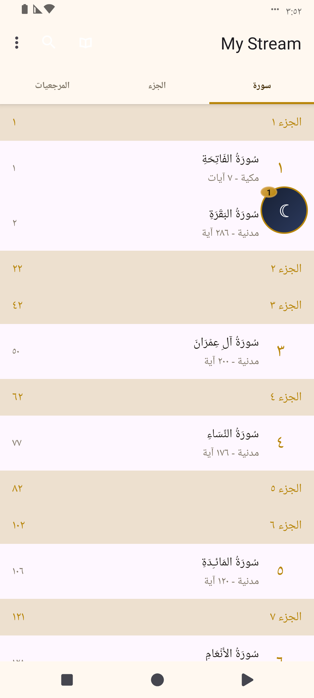
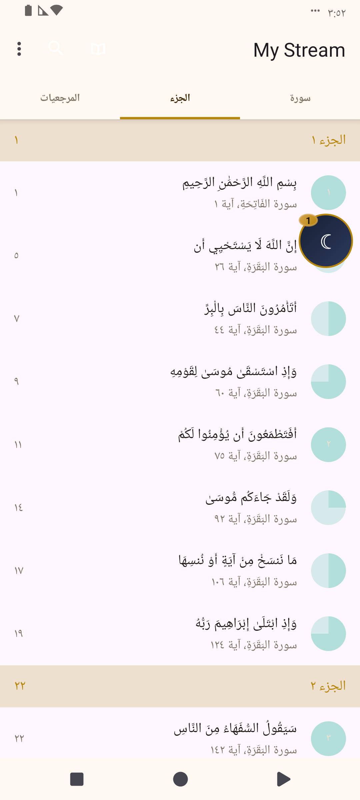
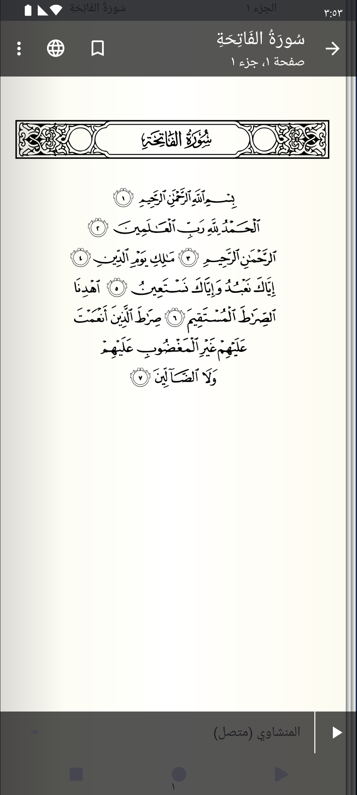
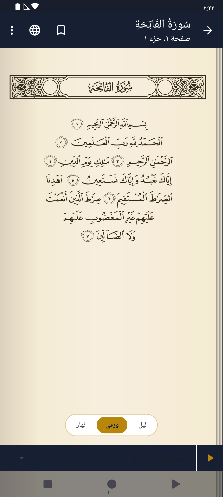
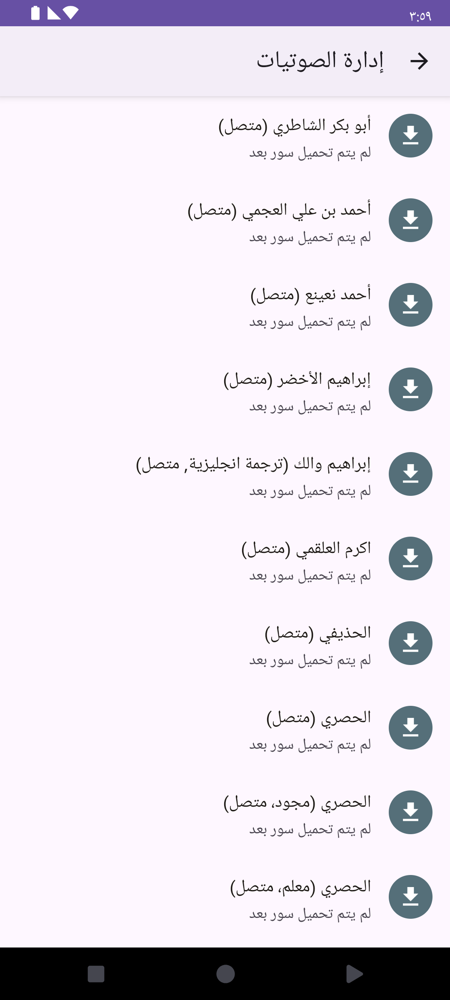
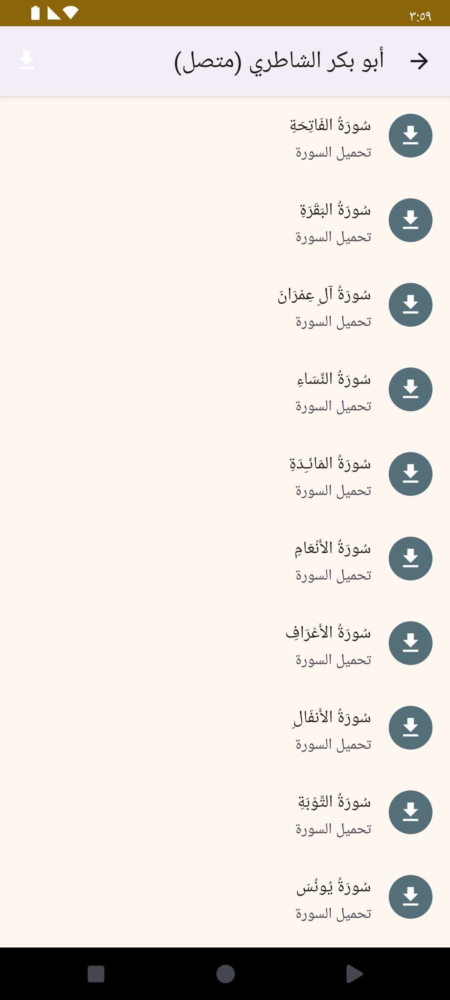
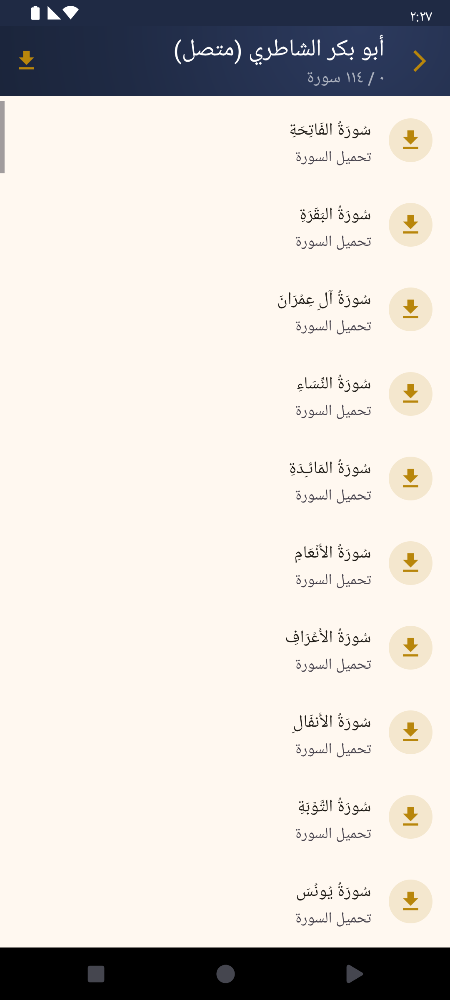
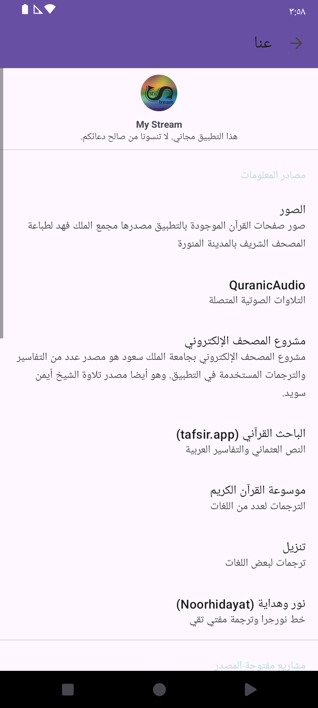
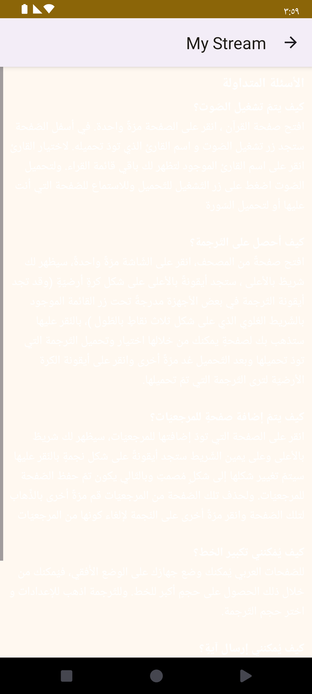
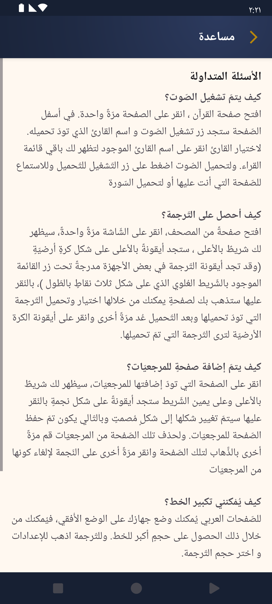

Mushaf re-theme — Current vs Proposed (real screenshots)
Actual device screenshots, captured on the emulator (Arabic, light theme). LEFT = current — the app built from commit 97fab84, the state right before the Mushaf re-theme. RIGHT = proposed — the re-themed build that is now on feature/mushaf-retheme. No mockups; these are the real running screens.
01 Quran Index — Surah list
Sepia/cream bar titled “My Stream” with warm-tan Juz' separator bands and plain gold sura numbers → navy collapsing hero (“Mushaf / The Holy Quran”), an always-on search field, Surahs/Juz/Bookmarks tabs with a gold indicator, a Continue-reading card, and rounded gold badges.


02 Index — Juz' list & progress markers
Warm-tan section bands and teal rub'-el-hizb pie markers → a cool navy-tint band with navy/gold text and gold pie markers.


03 Reader page — chrome & paper modes
A flat grey top bar and grey audio bar around the page image, with no paper-mode control → a navy top bar (back / translation / bookmark), gold Day/Sepia/Night chips and a navy audio bar with a gold play button.


04 Reciter audio download manager
A purple status bar + lavender action bar with slate-teal download circles on plain rows → a navy hero (“Audio Manager · Reciters”) with gold-faint download discs and gold arrows.


05 Per-reciter surahs
Gold/lavender action bar with slate & brick-red download circles → a navy toolbar (reciter name + “X / 114 surahs”), gold download discs and an error-red trash for downloaded surahs.


06 About screen
A purple status bar above the toolbar and teal category headers → a navy status bar and gold category headers on a clean surface.


07 Help screen
A default light/grey action bar with body text that was hardcoded white — invisible on the light background → a navy hero with a gold back and fully readable text.

